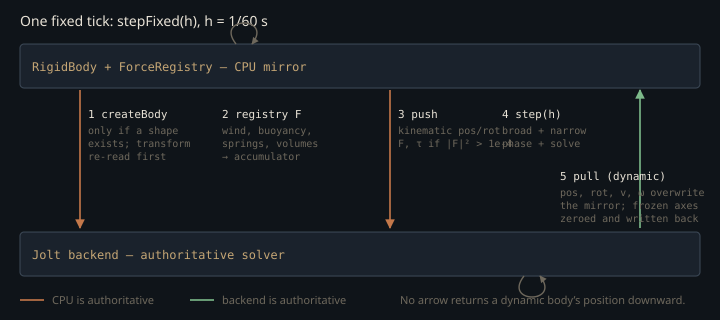

Monograph · Tree · ← Module hub · PhysicsWorld
physics
PhysicsWorld
Config, state machine, step, body registry.
A mirror, not a solver
`PhysicsWorld` computes no dynamics. Every contact, constraint and integration step happens inside Jolt; the class owns a parallel CPU copy of each body (`dynamics::RigidBody`) and a per-tick protocol for reconciling the two. That buys a swappable backend — `createPhysicsBackend("jolt")` falls back to `NullPhysicsBackend` if Jolt refuses to initialise — and it costs a synchronisation contract, which is most of what this page is about. The rule for who wins when mirror and backend disagree is not uniform: it changes per body type, per quantity, and per phase of the tick.
The 60 Hz that no setter can change
`step(dt)` is a fixed-timestep accumulator: variable frame time in, whole ticks of length $h$ out, remainder carried. With $A$ the carried remainder, $\Delta t$ the frame delta and $n$ the ticks executed,
The cap of four guards against the spiral of death, where catch-up work lengthens the next frame. The second branch is the interesting half: when the cap binds, leftover time is **discarded**, not banked.
if (stepsThisFrame >= maxStepsPerFrame) {ohao/physics/world/physics_world.cpp:149A world that cannot keep up therefore accrues no unpayable debt — it runs in slow motion, falling permanently behind wall clock past $4h \approx 66.7$ ms per frame. For an offline rig that is the right trade; in gameplay a hitch silently shortens the simulation.
$h$ is a private member with an initialiser and no writer anywhere in the tree:
float m_fixedTimestep{1.0f / 60.0f}; // 60 Hz physicsohao/physics/world/physics_world.hpp:320`PhysicsWorldConfig::timeStep` is a different variable; its setter stores a value nothing reads back into the loop.
void PhysicsWorld::setTimeStep(float timeStep) {ohao/physics/world/physics_world.cpp:270`maxSubSteps` is the same shape — exported to the Python bindings, never consulted; `maxStepsPerFrame` is a local constant that happens to share its default of 4. The rate is 60 Hz, hard.
Five phases, and why the order is load-bearing

Phase 1 creates backend bodies for any `RigidBody` lacking one — deferred registration, because a body is usually constructed before its shape and final transform exist. A shapeless body is skipped every tick until it gets geometry, so a mis-authored component quietly fails to simulate rather than crashing.
if (!body->getCollisionShape()) continue;ohao/physics/world/physics_world.cpp:479Just before creation the transform component is re-read into the mirror. The comment records the bug that put it there: callers set an actor's position *after* `createActorWithComponents` returns, so a body registered at component-init time would otherwise be born at the origin and fall from there.
comp->updateRigidBodyFromTransform();ohao/physics/world/physics_world.cpp:487Phase 2 runs the `ForceRegistry` — wind, buoyancy, springs, force volumes — into each body's CPU accumulator. Phase 3 pushes that accumulator down as one `applyForce`/`applyTorque` pair, gated on squared magnitude, so any resultant below 0.01 N is dropped. Phase 4 is the Jolt step. Phase 5 pulls results back and clears the accumulators, so a persistent force must be re-applied every tick.
Where a dynamic body's position actually lives
For a kinematic body the mirror is authoritative and its transform is pushed down each tick:
m_backend->setPosition(h, body->getPosition());ohao/physics/world/physics_world.cpp:306That is the only *post-creation* rigid-body position write in the tree — creation passes `info.position` once, and characters have their own `setCharacterPosition` — and it sits inside the kinematic branch. `RigidBody::setPosition` writes the mirror and stops:
void setPosition(const glm::vec3& position) { m_position = position; }ohao/physics/dynamics/rigid_body.hpp:37Teleporting a *dynamic* body from C++ does not move it. The write lands in the CPU mirror, Jolt never hears of it, and phase 5 of the next tick overwrites the mirror with the backend's unchanged position. Relocating one after registration means leaving `RigidBody` behind entirely and calling `getBackend()->setPosition(handle, p)` — that write exists and reaches `JPH::BodyInterface::SetPosition`. What does not exist is any `RigidBody` or `PhysicsWorld` method that routes a dynamic body to it.
m_physicsSystem->GetBodyInterface().SetPosition(id, toJoltR(pos), JPH::EActivation::DontActivate);ohao/physics/backend/jolt/jolt_backend.cpp:620Axis locks are the same pattern — a correction applied to the result rather than a constraint given to the solver. After the step, frozen velocity components are zeroed and written back:
if (fl & 1) lv.x = 0.0f;ohao/physics/world/physics_world.cpp:526The body still moves along a frozen axis *within* a tick; only the velocity is cancelled afterwards, so a hard impact displaces it by up to one step before the lock reasserts. Jolt's native `AllowedDOFs` would prevent the excursion outright.
The mesh that becomes a box
`buildCreationInfo` translates engine collision shapes into backend `ShapeInfo`. Boxes, spheres, capsules and cylinders map faithfully. A `TRIANGLE_MESH` silently becomes a box with the mesh's bounding half-extents:
// For now, fall back to boxohao/physics/world/physics_world.cpp:615That is not a backend limitation — the Jolt backend implements `ShapeInfo::Type::MESH` via `JPH::MeshShapeSettings`. The path from world to capability simply does not exist; the comment blames transient vertex data that `createBody` would have to copy.
Planes degrade twice over. `buildCreationInfo` throws away `PlaneShape`'s normal and distance and writes a hardcoded $+y$:
info.shape.planeNormal = glm::vec3(0, 1, 0);ohao/physics/world/physics_world.cpp:609It would not matter if it kept them, because `ShapeInfo::planeNormal` has no reader anywhere in the tree. `ShapeInfo::Type::PLANE` is turned into a finite 200 × 0.02 × 200 box — neither infinite nor arbitrarily orientable, which is the whole point of a plane:
JPH::BoxShapeSettings settings(JPH::Vec3(100.0f, 0.01f, 100.0f));ohao/physics/backend/jolt/jolt_backend.cpp:1502`buildCreationInfo` is also not the only translator. `PhysicsComponent::setCollisionShape` runs a second, divergent one — `collisionShapeToShapeInfo` — and pushes its result at the same backend through the public `getBackend()` handle:
m_physicsWorld->getBackend()->setShape(m_rigidBody->getBackendHandle(), shapeInfo);ohao/physics/components/physics_component.cpp:275That copy *does* forward a plane's real normal and distance, which the backend then discards anyway; and it has no `TRIANGLE_MESH` case at all, so a mesh falls through `default:` to a fixed 0.5-half-extent unit cube rather than its own bounds. Two paths into one backend, disagreeing on both shapes that degrade.
// Default to box for unsupported typesohao/physics/components/physics_component.cpp:260The one route to genuinely non-convex collision is the terrain heightfield, and it works because it bypasses `buildCreationInfo` and assembles its own `BodyCreationInfo`:
shape.type = backend::ShapeInfo::Type::HEIGHTFIELD;ohao/physics/world/physics_world.cpp:923Heights are normalised to [0, 1] with the vertical scale passed separately, and the body sits at `(-worldSize/2, 0, -worldSize/2)` because a Jolt heightfield grows from its origin corner, not its centre. Its collision layer is a bug in transit: `BodyCreationInfo::layer` is a layer *index*, and the assignment writes a *mask*.
info.layer = static_cast<uint16_t>(1u << 10); // LAYER_TERRAIN = 10ohao/physics/world/physics_world.cpp:937`CollisionLayer::TERRAIN` is the index 10, so the terrain ships as layer 1024, cast straight to `JPH::ObjectLayer`. 1024 is past `NUM_LAYERS = 16`, so the pair filter takes its unknown-layer escape hatch and terrain collides with everything — the `STATIC`↔`TERRAIN` and `TERRAIN`↔`TERRAIN` exclusions never fire — while `isNonMovingLayer(1024)` is false, filing a static heightfield under the MOVING broadphase layer.
return true; // Fallback: unknown layers collideohao/physics/backend/jolt/jolt_backend.cpp:153`updateTerrainFriction` then lerps one friction scalar through a fixed chain — dry 0.70 → wet 0.40 → snow 0.25 → frost 0.05. The chain is not purely sequential: the wet stage is weighted by `wetness * (1 - snowCover)`, so snow suppresses wetness instead of layering over it. Snow and frost do stack, and frost dominates whatever preceded it.
friction = glm::mix(friction, 0.40f, wetness * (1.0f - snowCover));ohao/physics/world/physics_world.cpp:957Profiles are snapshots, not quality presets
Despite the name, `SimulationProfile` has nothing to do with quality or performance tuning. It is a state snapshot — position, orientation, both velocities, both accumulators and the sleep flag per body, keyed by body id — and `ProfileManager` holds a named set of them. The header's own analogy is "Git branches for physics". `reset()` restores the active profile if one exists, and otherwise merely zeroes velocities and forces.
m_profileManager->restoreFromActive(m_rigidBodies);ohao/physics/world/physics_world.cpp:111State snapshots were chosen over recording and replaying the input stream. Replay reproduces exactly only if the solver is deterministic across thread counts, which a multithreaded Jolt job system does not promise; a snapshot is reproducible by construction. The price is that it restores one instant, not a trajectory.
The price is steeper than that. `restore` writes only through `RigidBody` setters, which never reach the backend for a dynamic body. Restoring a profile on a world whose bodies are already registered updates the visible transforms, and the first tick after resuming snaps everything back to wherever the solver left it — sound for a stopped world about to be rebuilt, not yet sound as a live checkpoint.
The config fields nothing reads
The Jolt backend consumes `gravity`, `enableMultithreading`, `workerThreads` and `maxBodies` (which also sizes body pairs and contact constraints); the world uses exactly one field, `initialBodyCapacity`, to reserve its body vector. The rest — `enableCCD`, `enableSleeping`, `maxConstraints`, `enableStatistics`, `enableProfiler`, `enableDebugVisualization`, plus `timeStep` and `maxSubSteps` — is declared and never acted on.
`enableDebugVisualization` is the subtlest of those, because it is not inert: it gates a call to `updateDebugVisualization()` at the end of both `step()` and `stepOnce()`. That function has an empty body, and nothing anywhere writes the `m_debugViz` struct it would fill.
void PhysicsWorld::updateDebugVisualization() {ohao/physics/world/physics_world.cpp:328`enableCCD` misleads in the opposite direction. Continuous collision *is* shipped in the backend: `BodyCreationInfo::useCCD` selects `EMotionQuality::LinearCast` at creation, and `setCCDEnabled` flips motion quality at runtime. What is missing is the wiring — `buildCreationInfo` never sets `useCCD`, and no `PhysicsWorld` or `RigidBody` method reaches `setCCDEnabled` — so no body this world creates ever asks for it.
bodySettings.mMotionQuality = JPH::EMotionQuality::LinearCast;ohao/physics/backend/jolt/jolt_backend.cpp:542A second struct, `PhysicsSettings`, carries different defaults (240 Hz substep, CCD on, sleep thresholds) and is consumed by nothing, because the overload that appears to accept it is a compatibility template that discards its argument:
[[nodiscard]] bool initialize(const T& /*unused_settings*/) { initialize(); return true; }ohao/physics/world/physics_world.hpp:112`Scene`'s constructor is its only caller, immediately after constructing the world — which already ran `initialize()`:
physicsWorld->initialize(settings);ohao/scene/scene.cpp:35The re-entry guard tests for `STOPPED`, but `STOPPED` means both "never initialised" and "initialised and idle", so the second call reruns everything: a fresh Jolt backend replaces the first, and `ProfileManager` and `ForceDebugger` become new instances. Harmless today — no bodies exist yet at that point — but on a populated world it would leave every `RigidBody` holding a handle into a destroyed Jolt system.
Gravity collides the same way. The backend applies it itself:
m_physicsSystem->SetGravity(toJolt(config.gravity));ohao/physics/backend/jolt/jolt_backend.cpp:334while `setupEarthEnvironment()` registers a `GravityForce` generator adding $m\mathbf{g}$ to the accumulator, which phase 3 pushes down on top:
glm::vec3 force = m_gravity * mass;ohao/physics/forces/gravity_force.cpp:17The presets predate the backend: "Earth" doubles gravity, and "Space" — which registers nothing — does not produce zero-g, because clearing the registry cannot cancel a value held inside Jolt.
Nothing in the engine presses Play
`step()` returns immediately unless the state is exactly `RUNNING`. `resume()` only lifts `PAUSED` and `pause()` only leaves `RUNNING`, so the sole route out of `STOPPED` is `setSimulationState` — which no call site in `ohao/` uses. `Scene::updatePhysics` would step the world:
physicsWorld->stepSimulation(deltaTime);ohao/scene/scene.cpp:199except that it never executes. Its only caller is `VulkanRenderer::updatePhysics`, and nothing calls *that* — no example, no render loop. This is unreached code sitting above the state check, not a per-frame tick that early-returns.
m_scene->updatePhysics(deltaTime);ohao/gpu/vulkan/renderer.cpp:372Two harnesses do drive the world, and neither arrives through `Scene`. The Python binding layer's `start()` flips the state before the test suite pumps `world.step(1/60)`:
world.setSimulationState(SimulationState::RUNNING);tests/python/physics_bindings.cpp:120The C++ backend tests bypass the state machine outright, through `stepOnce()` — which inverts `step()`'s guard, returning early if the state *is* `RUNNING` and otherwise running one full `stepFixed(m_fixedTimestep)` from `STOPPED`:
// Already running, don't interfereohao/physics/world/physics_world.cpp:162// Step once so Jolt processes the impulsetests/physics/physics_backend_tests.cpp:1366So the heading is literal rather than figurative: the world simulates plenty under test, it simply never enters `RUNNING` outside the Python bindings. That is the honest scope of this unit today — a headless kernel exercised by the analytical-solution and invariant tests, wired into `Scene` but reached by no renderer example. `SimulationState::STEPPING` is never assigned anywhere, and the free function that counts it as live has no call site in `ohao/` at all; the member predicates are `isRunning()` and `isPaused()`, and neither knows about it.
[[nodiscard]] constexpr bool isSimulating(SimulationState s) noexcept {ohao/physics/world/physics_world.hpp:61Contracts
- A `RigidBody` reaches the backend only once it has a collision shape; until then its velocity writes accumulate in the mirror, to be flushed at creation.
- For dynamic bodies the backend owns position, rotation and both velocities after every tick. Writing those through `RigidBody` setters is not a teleport.
- Force accumulators are cleared each tick, and any resultant below 0.01 N is dropped by the push threshold.
- `flushPendingBodies()` must run before constraint creation. An unflushed body yields `INVALID_BODY`, which makes `createConstraint` return `INVALID_CONSTRAINT` as `body1` — and, worse, is read as *fixed to world* as `body2`.
- One terrain heightfield per world: `addTerrainHeightfield` destroys the previous body before creating the new one. It files that body on object layer 1024 — a mask where an index belongs — so it sits outside the 16×16 matrix and none of the terrain collision exclusions apply to it.
- Changing a shape through `PhysicsComponent::setCollisionShape` takes a different translator than body creation does. The two agree on box, sphere, capsule and cylinder and disagree on mesh; both lose the plane.
- `initialize()` is not idempotent on a populated world — it rebuilds the backend while every `RigidBody` keeps its stale handle.
- `PhysicsWorldFactory`, `PhysicsManager` and `PhysicsProfiler` are declared in the header with no definitions anywhere in the tree. Using them, including the `PROFILE_PHYSICS` macro, is a link error, not a feature.
Source files
ohao/physics/world/physics_world.cppohao/physics/world/physics_world.hppohao/physics/dynamics/rigid_body.hppohao/physics/backend/jolt/jolt_backend.cppohao/physics/components/physics_component.cppohao/scene/scene.cppohao/physics/forces/gravity_force.cppohao/gpu/vulkan/renderer.cpptests/python/physics_bindings.cpptests/physics/physics_backend_tests.cppohao/physics/world/physics_settings.hppohao/physics/world/profile_manager.hppohao/physics/world/profile_manager.cppohao/physics/world/simulation_profile.hppohao/physics/world/simulation_profile.cppParent hub for the full pipeline narrative; this page is the file-level design unit. Sitemap · hover glossary terms anywhere.